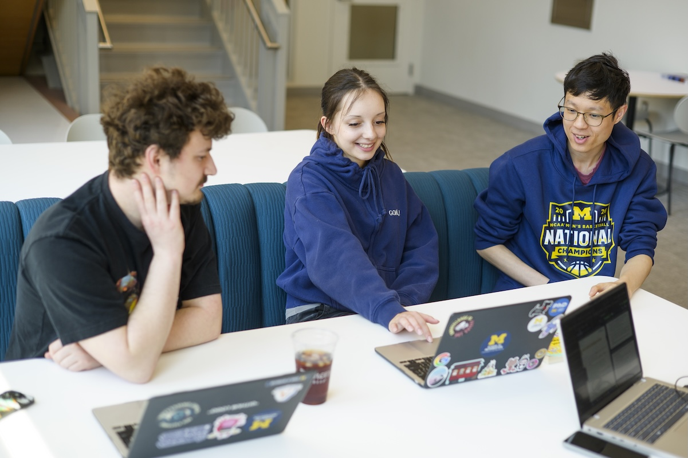
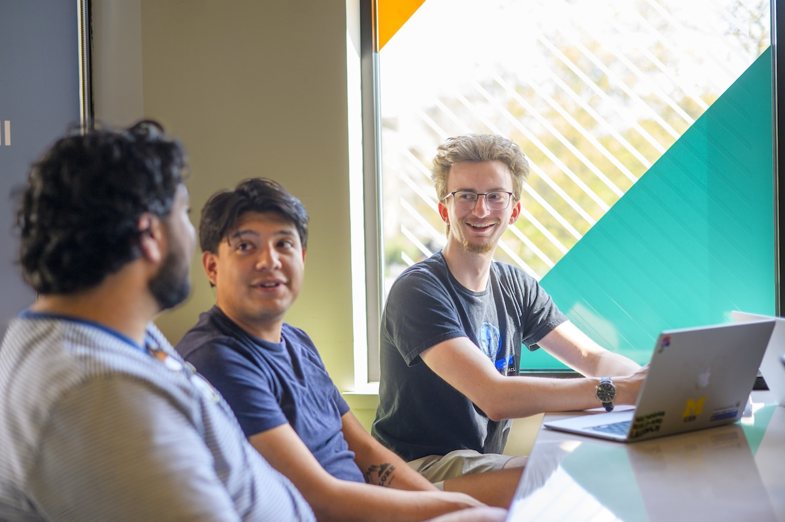

Turn Your Preparation into a Shared Plan
Starting an engaged learning experience means getting to know the people you will work with and deciding how you will work together. Use this guide to contact your partner, prepare for your first meeting, and establish clear team responsibilities.

Why a Strong Start Matters
Your team and your partner may begin with different ideas about the project. Early conversations help everyone understand the goals, available time, and expected results before making commitments. Asking questions now can prevent confusion later.
You do not need to have every answer at your first meeting. Come ready to listen, explain what your team can contribute, and identify what you still need to learn. A useful starting plan is one that everyone understands and can return to as the work develops.
Phase 2: Starting the Experience
Make the First Connection
Introduce your team and explain why you are reaching out. Keep your message clear and respectful, include the purpose of the project, and suggest a next step such as arranging an introductory meeting.
Use the Initial Client Email Examples to help organize your message. Adapt the wording to your team and partner rather than sending a template unchanged.
Prepare for the First Meeting
A meeting agenda helps everyone know what to discuss. Make space for introductions, the partner's priorities, questions about the project, and a discussion of next steps. Ask a team member to take notes so that decisions and unanswered questions are not lost.
Review the Initial Client Meeting Sample Agenda before your meeting and adjust it to the topics you need to cover.
Agree on Roles and Expectations
Discuss who will handle tasks, communicate with the partner, and keep track of decisions. Agree on realistic expectations for meetings, response times, and feedback. Write down the project scope so that the team and partner share an understanding of what the work includes.
- Team responsibilities: Decide who is responsible for each part of the work.
- Communication: Choose how and when to contact one another.
- Project scope: Clarify the expected deliverables and any limits on the work.
- Shared agreements: Record decisions and ask the partner to clarify anything uncertain.
Questions to Bring to Your First Meeting
- What does the partner hope this project will accomplish?
- Who will use or be affected by the final work?
- What deadlines, resources, or constraints should we understand?
- Who should our team contact with questions?
- How will the partner review progress and provide feedback?
- What should each person do before the next meeting?

A Suggested Starting Process
- Introduce your team: Send a professional message and arrange the first meeting.
- Prepare together: Review the project context and write an agenda with questions.
- Listen and clarify: Learn about the partner's needs and discuss realistic goals.
- Record agreements: Write down roles, communication practices, and the initial scope.
- Confirm next steps: Share a meeting summary with action items and responsibilities.
Additional Starting Resources
- Ginsberg Center Student-Client Partnership Toolkit: Explore guidance on building respectful, reciprocal relationships with community partners.
- Student-Client Partnership Guide: Review guidance for discussing expectations and deliverables with your partner.
- Student Org-ELO Partnership Agreement Template: For student organizations working with ELO, use this resource to document partnership roles.
Once your team has a starting plan, visit During Your Experience for guidance on managing progress and using feedback.